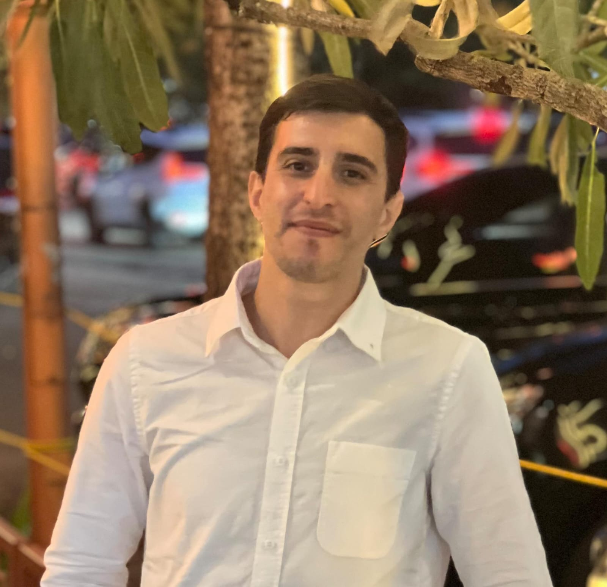
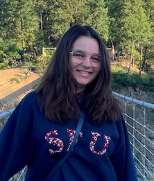
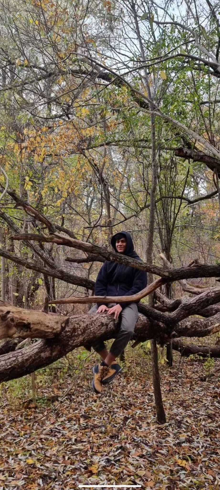

Assistant Professor
01/2021 -
Modeling evolution with math
|
|
Matt Osmond
Assistant Professor 01/2021 - Modeling evolution with math |
|  |
Abdullah Hassan
PhD student 01/2026 - Evolutionary theory (details TBD) |

|
Tabris Cao
Undergrad student (Centre for Global Change Science internship, EEB397, EEB498) 05/2024 - 04/2025, 09/2025 - Inferring the spatial history of penguins and crows |
|  |
Rebekah Hall
PhD student (cosupervised by Vincent Calvez in Brest, France) 10/2024 - Stochasticity in moving optimum models |

|
Kuangyi Xu
Postdoc (EEB Postdoctoral Fellow) 10/2023 - Models of evolutionary rescue |

|
Chris Carlson
PhD student (cosupervised by Megan Frederickson) 09/2023 - Models of mutualism |

|
Mete Yuksel
PhD student (cosupervised by Nicole Mideo) 09/2022 - Models of infectious disease and recombination |

|
Puneeth Deraje
PhD student 09/2021 - Models of evolutionary rescue and movement on ARGs |

|
Sydney Ackermann
MSc student 09/2021 - 12/2022 Model of life-history evolution in cancer Next: PhD at UC Santa Barbara |
|  |
Raghav Singhal
Undergrad student (Data Science Institute fellowship) 05/2025 - Locating genetic ancestors with ancient DNA |

|
Catherine Yan
Undergrad student (University of Toronto Excellence Award) 05/2024 - 08/2024 Inferring the spatial history of humans |

|
Litong Zheng
Undergrad student (work-study) 05/2023 - 08/2023 Shiny app for model of disease emergence |

|
Tam Ly
Undergrad student (EEB Undergraduate Summer Research Award) 05/2023 - 08/2023 Model of life-history effects on evolutionary rescue |

|
Jahin Kabir
Undergrad student (Northrop Frye Award) 05/2022 - 08/2022 Simulation of Arabidopsis thaliana geographic history |

|
Anthony McCanny
Undergrad student (EEB497) 01/2022 - 04/2022 Review of population epigenetics models |

|
Alex Whitwam, Matt, Esther Cho, Nadine Richard, Pam Alamilla (clockwise from top left)
Undergrad students (work-study) 05/2021 - 08/2021 Simulating and visualizing spatial tree sequences |

|
You?
Undergrad/Msc/PhD/Postdoc See Join for more info |